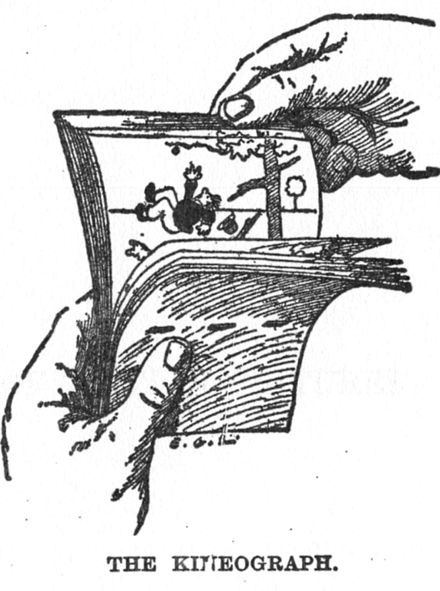
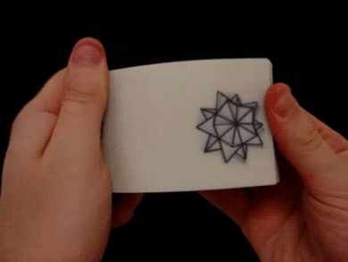
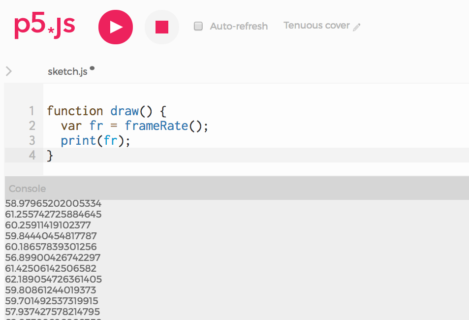

1. Move a ball towards the right
When we watch a movie, what we are really seeing is a series of still images flipping very fast. The illusion of motion is created in the same way as in a paper flip book:


Let's start by creating an the illusion with just pen and paper. Using the corners of your notebook, create the illusion of a small ball moving to the right. On the first page, draw a little ball. On the next, draw it slightly to the right. On the next, more to the right, and so on. When you are done, flip the pages to see the ball move.
In p5, each time the draw loop runs, it draws an image. Our sketches are like digital flip books: each image rendered by draw is like a new page in the book. When p5 runs, it calls draw again and again, drawing image after image, as if it were flipping the pages of a book. Each 'page' p5 draws is called a frame.
If p5 acts like a flip book, this means we can create animations with it. Let's re-create the moving-ball illusion in p5. We will do it in the same way as you just did on your notebook: start by drawing the ball on the left of the canvas, then draw it slightly to the right, then slightly more to the right, and so on.
From frame to frame (which is to say, each time draw runs), the only thing that changes is the x position of the ball. We want it to vary. So let's start by creating a variable and calling it x (line 1). In setup we assign x to 0, so that the ball starts from the left edge of the screen (line 5). Then, in draw, we add 1 to that position (line 10). As draw is called by p5 over and over again, x will grow:
- In the first frame, x is 0
- In the second frame,
x will be 1.
- In third,
x will be 2
- ...and so on: in frame 500, for example,
x will be 499
The value of our
x variable will continue to grow with each frame until the sketch stops running. In fact, at some point
x will become larger than the width of our canvas, and we won't see our ball anymore. Take a look at the sketch below. Do you see a white ball moving to the right? If all you see is a black rectangle, it probably means that many frames have passed since you loaded this page, and the ball has moved beyond the right edge of the canvas. To see it moving, re-start the sketch by refreshing this page, or copy the code below it to run it on the p5 editor.
One thing we can do to make sure we always see our white ball moving to the right is having it move back to the left edge once it has reached the right edge of our canvas.
We make that happen by adding a simple if statement to our sketch:
if(x > width){ // if the ball has passed the left edge of the canvas
x = 0; //move the ball back to the right edge
}
Take a look at the working sketch below ––this if statement is between lines 12 and 14:
2. Flip the book faster, slower
Just like we can flip a paper books faster or slower, can run our draw loop faster or slower: we can draw only 5 frames per second; we can draw 50 frames per second. This speed is called frame rate. In cinema, the typical rate is 24fps (fps stands for 'frames per second'). By default, p5 draws at 60fps. Or, rather, it tries to run at 60fps. Whether it can or not will depend on each computer and how busy it is with other tasks. To see the rate p5 is running at, we can we can call the frameRate function. Paste this code on the p5 editor and take a look at the console:
function draw() {
var fr = frameRate();
print(fr);
}
Here is a screenshot from my editor:

This means that, on my computer, at the time I wrote this, p5 was able to draw around 60 frames per second (as expected). This number might lower if I tried to draw hundreds of balls on each frame, for example. But, for our one-ball example, this is not a problem.
Usually, we just let p5 run with its default frameRate. However it is possible to change it: the frameRate function can also be used to set the rate we want p5 to run at. frameRate(2) tells p5 to draw a maximum of 2 frames per second. Below, we add this line to our moving ball example:
var x;
function setup() {
createCanvas(600, 120);
x = 0;
frameRate(2);
}
function draw() {
background(0);
x = x + 1; // Move slightly to the right
if (x > width){ // If reached the end of the screen, go back to the left edge
x = 0;
}
ellipse(x, 60, 20, 20);
}
As you can see, at 2fps the illusion of motion is broken: we don't see a ball in smooth motion but a ball skipping from one position to the next. The illusion of motion starts happening at around 12fps, but is smoother at 24fps and higher. Try setting the frame rate to different values and see the difference.
3. Move the ball faster, slower
Let's go back to our notebook animation. If we wanted our ball to move slower, how would we do this? One way is to flip the pages slower, but as we just saw, if we flip them too slow, the illusion of motion breaks. What we can do is flip at the same speed but, in each page, move the ball by a smaller amount than before. Similarly, if we wanted to have our ball move faster, we could flip the pages faster, but there's a limit to how fast we can flip them. To have the ball move faster, we can flip at the same speed, but draw them farther apart in each page.
Drawing each ball closer together or farther apart from one page to the next is much faster and easier to do in p5 than on paper. On paper, we would have to make many more drawings. In p5, we can just add smaller or larger numbers to x in each frame. Until now, we have been adding 1 pixel to the position of the ball each time the draw looop is called (x = x + 1). Try adding other numbers instead; for example: x = x + 0.2, x = x + 15.
As you can see, this number we add to x in each frame determines the speed of the ball. So let's replace the number 1 with a variable called speed (x = x + 1 becomes x = x + speed). This doesn't change how our sketch works, but we might argue it makes it a bit clearer: to change the speed of the ball, we can now change the value of the speed variable on top. Paste this code on the editor and try changing the speed to different numbers and see the result.
var x;
var speed;
function setup() {
createCanvas(600, 120);
x = 300; // Start at the center
speed = 1; // Try different speeds: 0.2, 3, 10
}
function draw() {
background(0);
x = x + speed; // Move to the right
if (x > 600){ // If reached the end of the screen, go back to the left edge
x = 0;
}
ellipse(x, 60, 20, 20);
}
A note: because expressions like x = x + speed are so common, there is a shorthand for them. x += speed does exactly the same. Prove it by replacing the line in the code: the sketch behaves exactly in the same way. This is a common shorthand, you will most likely encounter it in the future, and it also works for other operations:
x = x + 1 can be written as x += 1x = x - 1 can be written as x -= 1x = x * 1 can be written as x *= 1x = x / 1 can be written as x /= 1
Teacher support Resources
- Getting Started With p5.js: Chapter 8. Motion
- Learning Processing: Chapter 4. Variables; Chapter 5. Conditionals (Bouncing Ball)